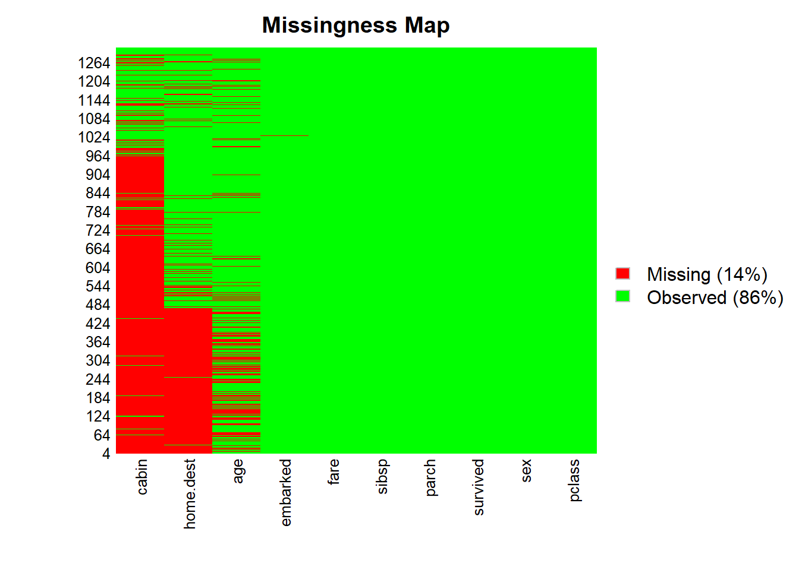
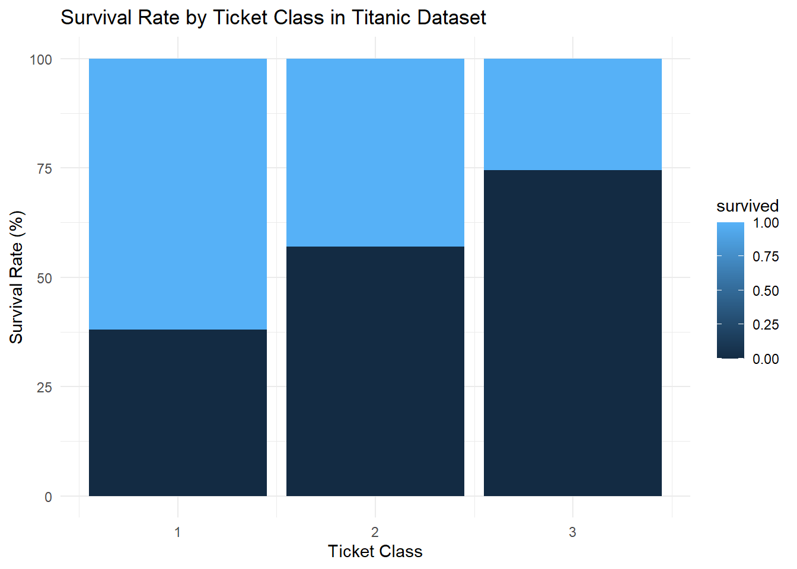

The goal of this project is to go through the Titanic lab that I found online and provide commentary on its usefullness. For next portfolio piece I hope to create a new lab using the Titanic data set based on my review of the current project. https://medium.com/@datathon/r-for-data-science-data-wrangling-d125285a6876
Much of the current lab has information that is unnecessary for where students are at this point in the semester. For example, the site includes installing R directions and explains the layout of R. For a visualization lab for this class, these instructions are unnessecary.
The clarity of this step could be improved. Here are some new steps:
Go to Kaggle Titanic Dataset - there are a lot of datasets on titanic out there, however the lab was not clear which was being used… so i believe this is the best match https://www.kaggle.com/datasets/ibooth1/titanic3
Download the dataset in the format you would like, I did excel csv
Extract the data set to your portfolio folder
Install/load packages
library(tidyr)
library(readxl)
library(Rcpp) # needed to load Amelia
library(Amelia) # package for missing data/imputation## ##
## ## Amelia II: Multiple Imputation
## ## (Version 1.8.3, built: 2024-11-07)
## ## Copyright (C) 2005-2025 James Honaker, Gary King and Matthew Blackwell
## ## Refer to http://gking.harvard.edu/amelia/ for more information
## ##library(dplyr)##
## Attaching package: 'dplyr'## The following objects are masked from 'package:stats':
##
## filter, lag## The following objects are masked from 'package:base':
##
## intersect, setdiff, setequal, unionlibrary(readxl)
titanic <- read_xls("titanic3.xls")## Warning: Coercing text to numeric in M1306 / R1306C13: '328'str(titanic)## tibble [1,309 × 14] (S3: tbl_df/tbl/data.frame)
## $ pclass : num [1:1309] 1 1 1 1 1 1 1 1 1 1 ...
## $ survived : num [1:1309] 1 1 0 0 0 1 1 0 1 0 ...
## $ name : chr [1:1309] "Allen, Miss. Elisabeth Walton" "Allison, Master. Hudson Trevor" "Allison, Miss. Helen Loraine" "Allison, Mr. Hudson Joshua Creighton" ...
## $ sex : chr [1:1309] "female" "male" "female" "male" ...
## $ age : num [1:1309] 29 0.917 2 30 25 ...
## $ sibsp : num [1:1309] 0 1 1 1 1 0 1 0 2 0 ...
## $ parch : num [1:1309] 0 2 2 2 2 0 0 0 0 0 ...
## $ ticket : chr [1:1309] "24160" "113781" "113781" "113781" ...
## $ fare : num [1:1309] 211 152 152 152 152 ...
## $ cabin : chr [1:1309] "B5" "C22 C26" "C22 C26" "C22 C26" ...
## $ embarked : chr [1:1309] "S" "S" "S" "S" ...
## $ boat : chr [1:1309] "2" "11" NA NA ...
## $ body : num [1:1309] NA NA NA 135 NA NA NA NA NA 22 ...
## $ home.dest: chr [1:1309] "St Louis, MO" "Montreal, PQ / Chesterville, ON" "Montreal, PQ / Chesterville, ON" "Montreal, PQ / Chesterville, ON" ...as_tibble(titanic)## # A tibble: 1,309 × 14
## pclass survived name sex age sibsp parch ticket fare cabin embarked
## <dbl> <dbl> <chr> <chr> <dbl> <dbl> <dbl> <chr> <dbl> <chr> <chr>
## 1 1 1 Allen, … fema… 29 0 0 24160 211. B5 S
## 2 1 1 Allison… male 0.917 1 2 113781 152. C22 … S
## 3 1 0 Allison… fema… 2 1 2 113781 152. C22 … S
## 4 1 0 Allison… male 30 1 2 113781 152. C22 … S
## 5 1 0 Allison… fema… 25 1 2 113781 152. C22 … S
## 6 1 1 Anderso… male 48 0 0 19952 26.6 E12 S
## 7 1 1 Andrews… fema… 63 1 0 13502 78.0 D7 S
## 8 1 0 Andrews… male 39 0 0 112050 0 A36 S
## 9 1 1 Appleto… fema… 53 2 0 11769 51.5 C101 S
## 10 1 0 Artagav… male 71 0 0 PC 17… 49.5 <NA> C
## # ℹ 1,299 more rows
## # ℹ 3 more variables: boat <chr>, body <dbl>, home.dest <chr>missmap(titanic, col = c("red", "green"))## Warning: Unknown or uninitialised column: `arguments`.
## Unknown or uninitialised column: `arguments`.## Warning: Unknown or uninitialised column: `imputations`.21% of data is missing
#Select relevant columns for the analysis
selected_titanic <- titanic %>%
select(age, pclass, sex, survived, embarked, fare, cabin, parch, sibsp, home.dest)Reassess missing map
missmap(selected_titanic, col = c("red", "green"))## Warning: Unknown or uninitialised column: `arguments`.
## Unknown or uninitialised column: `arguments`.## Warning: Unknown or uninitialised column: `imputations`. Missing is now 11%
#Drop all the missing values
selected_titanic <- drop_na(selected_titanic)missmap(selected_titanic, col = c("red", "green"))## Warning: Unknown or uninitialised column: `arguments`.
## Unknown or uninitialised column: `arguments`.## Warning: Unknown or uninitialised column: `imputations`.as_tibble(selected_titanic)## # A tibble: 239 × 10
## age pclass sex survived embarked fare cabin parch sibsp home.dest
## <dbl> <dbl> <chr> <dbl> <chr> <dbl> <chr> <dbl> <dbl> <chr>
## 1 29 1 female 1 S 211. B5 0 0 St Louis, MO
## 2 0.917 1 male 1 S 152. C22 C26 2 1 Montreal, P…
## 3 2 1 female 0 S 152. C22 C26 2 1 Montreal, P…
## 4 30 1 male 0 S 152. C22 C26 2 1 Montreal, P…
## 5 25 1 female 0 S 152. C22 C26 2 1 Montreal, P…
## 6 48 1 male 1 S 26.6 E12 0 0 New York, NY
## 7 63 1 female 1 S 78.0 D7 0 1 Hudson, NY
## 8 39 1 male 0 S 0 A36 0 0 Belfast, NI
## 9 53 1 female 1 S 51.5 C101 0 2 Bayside, Qu…
## 10 47 1 male 0 C 228. C62 C64 0 1 New York, NY
## # ℹ 229 more rows#merge columns parch and sibsp to create a new column, FamilySize
selected_titanic$FamilySize <- selected_titanic$sibsp
+ selected_titanic$parch + 1## [1] 1 3 3 3 3 1 1 1 1 1 1 1 1 2 2 1 2 2 1 1 1 1 1 1 1 1 1 2 1 1 1 1 1 1 1 2 2
## [38] 1 3 3 3 3 1 1 1 1 1 1 1 1 1 1 1 2 2 3 1 2 3 2 1 1 1 1 3 1 1 2 3 2 1 2 1 1
## [75] 1 1 2 1 1 1 1 1 3 3 3 3 5 5 1 3 2 2 1 1 1 1 1 1 1 2 2 2 2 1 1 1 1 1 1 1 1
## [112] 2 2 1 1 2 2 1 1 1 1 1 1 1 1 1 1 1 2 2 1 1 2 1 1 1 1 1 1 1 1 1 1 1 1 1 2 1
## [149] 1 3 3 2 2 1 1 1 1 1 1 1 1 1 2 2 1 1 1 1 3 3 3 4 4 1 1 1 1 1 1 1 1 1 1 1 1
## [186] 3 2 2 1 1 1 1 1 1 1 1 1 1 3 2 2 1 2 3 2 1 1 1 1 1 2 2 1 3 2 3 2 1 1 2 2 2
## [223] 4 1 1 1 1 1 1 1 2 2 3 1 1 1 1 1 1#Categorize the fare column and assign label to each category
selected_titanic$FareCategory <- cut(selected_titanic$fare, breaks = c(0, 10, 20, 50, 100, Inf), labels = c("Lowest", "Lower Middle", "Upper Middle", "Higher", "Highest"))View(selected_titanic)#Remove irrelevant columns
selected_titanic <- selected_titanic %>%
select(-fare, -parch, -sibsp)#Change the values of columns survived, age, and pclass
selected_titanic <- selected_titanic %>%
mutate(
survived = ifelse(survived == 0, "No", "Yes"),
age = ifelse(age >= 18, "Adult", "Child"),
pclass = case_when(
pclass == 1 ~ "Upper",
pclass == 2 ~ "Middle",
pclass == 3 ~ "Lower"
)
)#Change the name of columns
selected_titanic <- selected_titanic %>%
rename(
Class = pclass,
Survived = survived,
Age = age
)#Create a table object fare_count
fare_count <- table(selected_titanic$FareCategory)
print(fare_count)##
## Lowest Lower Middle Upper Middle Higher Highest
## 2 13 67 97 58**Note: the website has a tibble of 270 rows, however reports 681 in their frequency counts…
library(ggplot2)
# Create summary data frame of counts and percentage of
# fare category from the selected titanic
summary_fare <- selected_titanic %>%
group_by(FareCategory)%>%
summarize(n = n())%>%
mutate(Fpercentage = n/sum(n) * 100)
# Create pie chart using the summary data frame
ggplot(summary_fare, aes(x = " ", y = n, fill = FareCategory))+
geom_bar(stat = "identity", width = 1, color = "white")+
coord_polar(theta = "y")+
theme_void()+
labs("Fare Distribution in Titanic Dataset", fill = "Fare Category")+
geom_text(aes(label = paste0(round(Fpercentage, 2), "%")),
position = position_stack(vjust = 0.5), color = "white")** Note: not particularly fond of the pie charts
gender_count <- table(selected_titanic$sex)
print(gender_count)##
## female male
## 113 126summary_gender <- selected_titanic %>%
group_by(sex) %>%
summarize(n = n()) %>%
mutate(Gpercentage = n / sum(n) * 100)
ggplot(summary_gender, aes(x = "", y = n, fill = sex)) +
geom_bar(stat = "identity", width = 1, color = "white") +
coord_polar(theta = "y") +
theme_void() +
labs(title = "Gender Distribution in Titanic Dataset", fill = "Gender") +
geom_text(aes(label = paste0(round(Gpercentage, 2), "%")),
position = position_stack(vjust = 0.5), color = "white")# Create a table of counts object for the Age column from the selected_titanic
# data frame
age_count <- table(selected_titanic$Age)
# Visualize the Age Distribution using pie function instead of ggplot2 library
pie(age_count, main = "Age Distribution in Titanic Dataset",
labels = paste(round(age_count/sum(age_count) * 100, 2), "%", sep = ""),
col = rainbow(length(age_count)))
# Add legend with age groups
legend("topright", names(age_count), cex = 0.8,
fill = rainbow(length(age_count)))# Create a bar chart visualizing the Embarked column using functions from
# the ggplot2 library
ggplot(selected_titanic, aes(x = embarked, fill = embarked)) +
geom_bar() +
theme_classic() +
labs(x = "Port of Embarkation", y = "Number of Passengers",
title = "Port of Embarkation Distribution in Titanic Dataset")# Create a table of counts object for the Class column
class_count <- table(selected_titanic$Class)
# Visualize the Age Distribution using pie function instead of ggplot2 library
barplot(class_count,
main = "Passengers' Ticket Class Distribution in Titanic Dataset",
xlab = "Ticket Class",
ylab = "Number of Passengers",
col = "skyblue")summary_destination <- selected_titanic %>%
group_by(home.dest) %>%
summarise(count = n()) %>%
arrange(desc(count)) %>%
head(10)
# Convert home.dest to a factor for better plotting
summary_destination$home.dest <- factor(summary_destination$home.dest, levels = summary_destination$home.dest)
# Create a heatmap
ggplot(summary_destination, aes(x = home.dest, y = count, fill = count)) +
geom_tile() +
labs(title = "Top 10 Destination Distribution of Passengers in Titanic Dataset",
x = "Destination", y = "Number of Passengers") +
theme_minimal() +
theme(axis.text.x = element_text(angle = 45, hjust = 1, vjust = 1))# Create a summary data frame object for the Survived column
summary_survived <- selected_titanic %>%
group_by(Survived) %>%
summarise(n = n(), .groups = "drop") %>%
mutate(Spercentage = n / sum(n) * 100)
# Create a pie chart using ggplot2 library
ggplot(summary_survived, aes(x = "", y = n, fill = factor(Survived))) +
geom_bar(stat = "identity", width = 1, color = "white") +
coord_polar(theta = "y") +
theme_void() +
labs(title = "Survival Distribution in Titanic Dataset", fill = "Survived") +
geom_text(aes(label = paste0(round(Spercentage, 2), "%")),
position = position_stack(vjust = 0.5), color = "white") +
scale_fill_manual(values = c("0" = "red", "1" = "darkgreen"),
labels = c("Did Not Survive", "Survived"))## Warning: No shared levels found between `names(values)` of the manual scale and the
## data's fill values.
## No shared levels found between `names(values)` of the manual scale and the
## data's fill values.
## No shared levels found between `names(values)` of the manual scale and the
## data's fill values.# Bin the fare values into categories
selected_titanic <- titanic %>%
mutate(FareCategory = cut(fare,
breaks = c(-1, 10, 30, 100, Inf),
labels = c("Low", "Medium", "High", "Very High")))
# Create a summary dataframe object
summary_sf <- selected_titanic %>%
group_by(FareCategory, survived) %>%
summarise(survival_rate = n(), .groups = "drop") %>%
mutate(sfPercentage = survival_rate / sum(survival_rate) * 100)
# Create the plot using the summary data frame
ggplot(summary_sf, aes(x = FareCategory, y = sfPercentage, fill = factor(survived))) +
geom_bar(stat = "identity", position = "dodge") +
labs(title = "Survival Rate by Fare Category in Titanic Dataset",
x = "Fare Category", y = "Survival Rate (%)") +
scale_fill_manual(values = c("0" = "red", "1" = "darkgreen"),
labels = c("Did Not Survive", "Survived")) +
theme_minimal()# Create a summary dataframe object
summary_sg <- selected_titanic %>%
group_by(sex, survived) %>%
summarise(count = n(), .groups = "drop") %>% # Fixing the grouping issue
mutate(sgPercentage = count / sum(count) * 100) # Ensuring percentages are correctly calculated
# Create the plot
ggplot(summary_sg, aes(x = sex, y = sgPercentage, fill = factor(survived))) +
geom_bar(stat = "identity", position = "stack") +
labs(title = "Survival Rate by Gender in Titanic Dataset",
x = "Gender", y = "Survival Rate (%)") +
theme_classic() +
scale_fill_manual(values = c("0" = "red", "1" = "darkgreen"),
labels = c("Did Not Survive", "Survived"))# Bin the Age variable into categories
selected_titanic <- selected_titanic %>%
mutate(age_group = cut(age,
breaks = c(-Inf, 18, 35, 60, Inf),
labels = c("Child", "Young Adult", "Adult", "Elderly")))
# Create a summary dataframe object
summary_sa <- selected_titanic %>%
group_by(age_group, survived) %>%
summarise(count = n(), .groups = "drop") %>%
mutate(saPercentage = count / sum(count) * 100)
# Create the plot
ggplot(summary_sa, aes(x = age_group, y = saPercentage, fill = factor(survived))) +
geom_bar(stat = "identity", position = "dodge") +
labs(title = "Survival Rate by Age in Titanic Dataset",
x = "Age Group", y = "Survival Rate (%)", fill = "Survived") +
theme_classic() +
scale_fill_manual(values = c("0" = "red", "1" = "darkgreen"),
labels = c("Did Not Survive", "Survived")) summary_sc <- selected_titanic %>%
group_by (pclass, survived) %>%
summarise(count = n())%>%
mutate(scPercentage = count/sum(count) * 100)## `summarise()` has grouped output by 'pclass'. You can override using the
## `.groups` argument.ggplot(summary_sc, aes (x = pclass, y = scPercentage, fill = survived)) +
geom_bar(stat = "identity", position = "stack") +
labs(title = "Survival Rate by Ticket Class in Titanic Dataset",
x = "Ticket Class", y = "Survival Rate (%)")+
theme_minimal()
# Create the summary dataframe
summary_sp <- selected_titanic %>%
group_by(embarked, survived) %>%
summarise(count = n(), .groups = "drop") %>%
mutate(spPercentage = count / sum(count) * 100)
# Create the plot
ggplot(summary_sp, aes(x = embarked, y = spPercentage, fill = factor(survived))) +
geom_bar(stat = "identity", position = "dodge") +
labs(title = "Survival Rate by Port of Embarkation in Titanic Dataset",
x = "Port of Embarkation", y = "Survival Rate (%)") +
theme_classic() +
scale_fill_manual(values = c("0" = "red", "1" = "darkgreen"),
labels = c("Did Not Survive", "Survived"))Overall, I enjoyed working through this lab as I found the topic to peak my interest. However, for the purposes of our class I believe that there are quite a few changes that could be made.
There was a lot of debugging that I had to do with the code provided. Much of this was for minor things such as sloppy capitalization, functions not working, etc. However, this could be very frustrating especially if it is used as an early lab and students are not well versed in debugging quite yet.
There was a lot of text that needed to be paraphrased/cut out.
This lab seemed to go on forever, and it would have benefited from clear/delineated steps.
There was an over reliance on pie charts, which as we have learned are not the best for presenting data.
It was oddly difficult to find the dataset that was being used - no link given, vague instructions… took much longer than needed
Better context could have been required for the steps, also there were some functions that were just given without proper activity
Lab could have been a bit more hands on, I genuinely felt like I was just copy and pasting code/didn’t write a single thing
There appear to be some errors with the number of people left in the dataset/something isn’t adding up see notes on counts above
For the next portfolio piece, my aim is to create a lab that would fit into the visualization portion of our class more fluidly, and improve some the areas above. :)